THE FIGHT FOR PEACE
The Soviet power is a locomotive
that uses 90 per cent of resources for blowing its hornA question to the former Radio Yerevan, the usual source of jokes in USSR: It will be war in the following years? Answer: Wars will be no longer, but it will be such a struggle for peace that it will not remain one stone upon another.
Let us start with some popular lyrics and tunes of the recent past:
Хотят ли русские,
Хотят ли русские,
Хотят ли русские войны! Е.Евтушенко (1961)Want the Russians,
Want the Russians,
Want the Russians war!
Yevgeny Yevtushenko (1961) - USSRSă fie pace, pace, pace pe Pământ! Adrian Paunescu (1970s) - Romania
Let there be peace, peace, peace on earth! (A.P. - Romania)
All we are saying is give peace a chance
All we are saying is give peace a chance
(Repeat 'til the tape runs out)John Lennon (1969) - UK
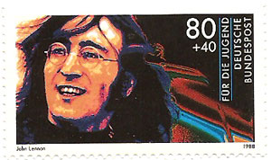
One can wonder what has driven so many people from different countries to imply themselves in the so-called fight for peace? Was is a spontaneous humanitarian movement or had it other, not necessarily benevolent roots? After the fall of the communism in Europe, Soviet archives were partially opened and the inconvenient truth emerged: at the origin there were the hands of, and the gold (meaning billions of dollars) coming from Moscow. Even if a revelation for some, it was actually largely known during decades. It is not completely swallowed yet by the former "useful idiots", term attributed to Lenin, and designing the supporters of communism that weren't fully aware of the consequences of their support.
Most of demonstrators for peace that fell in this category were the ones who lived in the free West. As for those living in the communist countries, thanks to their practical experience with the communism, many of them were knowledgeable enough about what it was all about, and they participated in such actions only because their participation was mandatory.
Let's start with how it philatelically started, in the beginning of the "peace movement", with the Soviet issue of two stamps of 1949 (Michel 1430 - 1431).
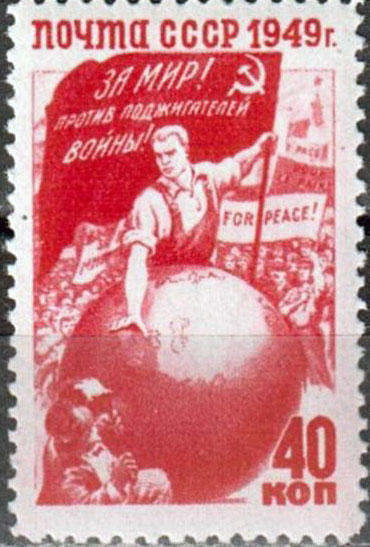
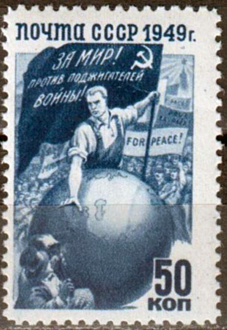
A worker in overalls holds a flag that reads "For peace! Against the war mongers!". With his hand on the globe, he prevents the capitalist with a top hat on his head and a torch in his hand from setting fire to the globe. Behind the worker marches a crowd carrying a slogan in English that reads "For peace!".
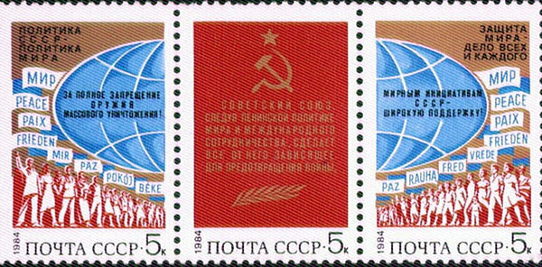
On the stamps issued in 1984 it is written: "The politics of USSR is a peaceful one," "For the full interdiction of weapons of mass destruction" and "Large support for the peace initiative of USSR."
Actually, in Eastern Europe, "Cold War" was not called "Cold War". It was called "fight for peace". The world was divided into evil capitalists (imperialists), which came together in a criminal organization called NATO, and who were hurtling on some free and happy people to decimate and to exploit them, and peaceful communists, united by noble ideals, who condemned the lack the humanism of the capitalists, while they were flying at the same time to a golden future (Andrei Plesu).
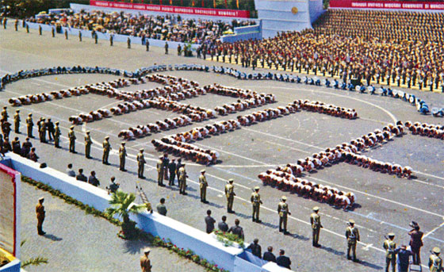
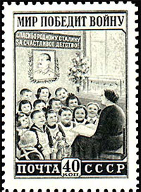
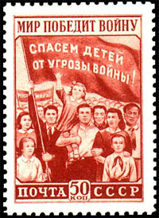
See above how looked an organized "demonstration" for peace (= PACE) in 1974, in the then communist Romania. The protection assured by the troops to the "spontaneous desire" for peace of the participating youth is enlightening. In fact the troops were protecting the high party and governments officials present in the tribunes, and the participation of the (kneeling) youth in such events was mandatory.
The Soviet stamp set "Peace will defeat the war" (the translation of the text inscribed on the top of the stamps), shown above, and issued in 1950, is an obvious example of early indoctrination in all directions, which began at a young age. Because "we" obviously represent peace and "they" war, we will win because our cause is just. It is important to notice that we, children, should not forget to whom we owe our happiness: "We thank to to dear Stalin for the happy childhood" (written on the classroom's wall, on the stamp on the left). Our purpose is clear: "Let save the children from the threat of war!". The text appears on the stamp on the right, being just another reminder of the fact that "we" are encircled by enemies who want our destruction.
The World Peace Council (WPC) was founded in 1950, the year when the Soviet postal administration issued the above stamps (not by chance, of course). The origins of the WPC lay in the Communist Information Bureau's (Cominform) doctrine, put forward in 1947, that the world was divided between peace-loving progressive forces led by the Soviet Union and warmongering capitalist countries led by the United States. Its first president was the eminent physicist Frédéric Joliot-Curie. According to the WPC, 90 per cent of its funding came from the Soviet Union which was said to have given it $49 million. Source.
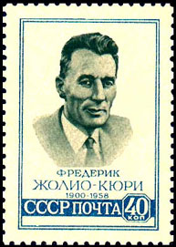
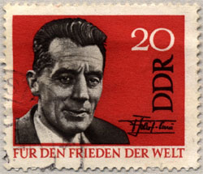
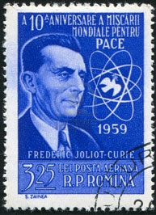
This explain why the French physicist was so celebrated on the stamps issued behind the Iron Curtain: USSR - 1959, DDR - 1964 - "For the world peace", Romania - 1959 - "10th anniversary of the world movement for peace"
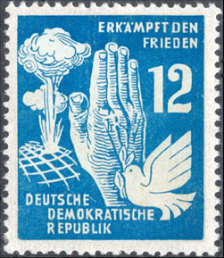
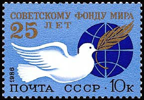
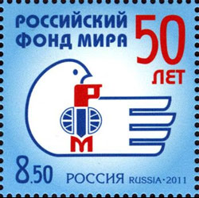
Also in 1950 was issued, by the obedient German Democratic Republic (DDR), the stamp with a suggestive image, labeled: Win the fight for peace.
As for the funding itself, it is commemorated on the above stamps on the right: USSR - 1986, 25 years of the Soviet fond for peace, and, amazingly for the uninitiated, Russia - 2011, 50 years of the Russian fond for peace.
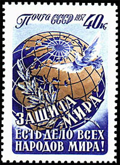
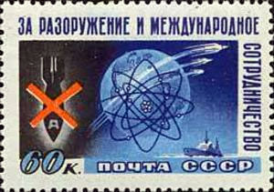
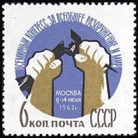
The corollary of the "fight for peace" was that for an alleged general disarmament.The Soviet block military forces had the superiority as well of the number of troops as of the conventional weapons, like tanks and planes. The free West counterbalanced this superiority by using sophisticated equipment, based on discouraging tactical and strategic nuclear weapons. The elimination of this armament was the real goal of the Soviet disarmament propaganda. It went, on the above stamps, from the general defense of peace (USSR, 1957, The defense of peace is a task of all nations) to calls for nuclear disarmament (USSR 1958, For disarmament and international collaboration; USSR, 1962, Worldwide congress for general disarmament and peace, Moscow, July 9 -14, 1962).
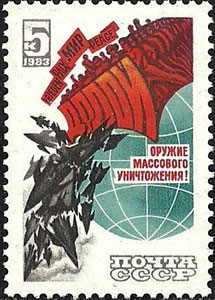
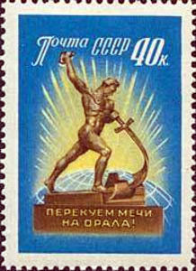
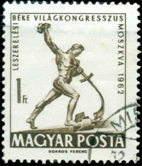
The first stamp above is riding on the same idea, USSR 1983 - "Down with the weapons of mass destruction!"
Suggestive work of art were largely used for the same goal, like the disarmament sculpture "Turning swords into plows", stamps issued by USSR in 1960 and by the communist Hungary in 1962.
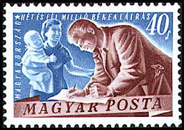
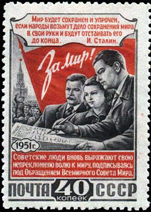
And how looked actually the fighting for peace in the communist Central/Eastern Europe? "Some fellows and comrades gathered together and said how good it is to have peace, what harmful is to have war and eventually signed some manifests when there were some international movements (after Zoe Petre, Romania). The above stamps display moments of this activity:
- Hungary 1950, Signing petition
- USSR 1951, inscribed (top to down) "Peace will be kept and enhanced if people will take the keeping of peace in their own hands and will defend it till the end. J. Stalin.", "For Peace!", "The Soviet people express their will for peace by signing the manifest of the World Peace Council"
Just to finally mention that those "fellows and comrades" have not gathered together on their own initiative but being summoned by the communist party bodies, and that they not only signed the documents but they have at the same time displayed all the happiness that they were able to express.
All we are saying is give peace a chance. All we are saying is give peace a chance. Repeat 'til the tape runs out.
Created: 05/15/2012. Revised: 2/14/2024 .
Copyright © 2012 - 2024 by Victor Manta, Switzerland/USA.
All rights reserved worldwide.